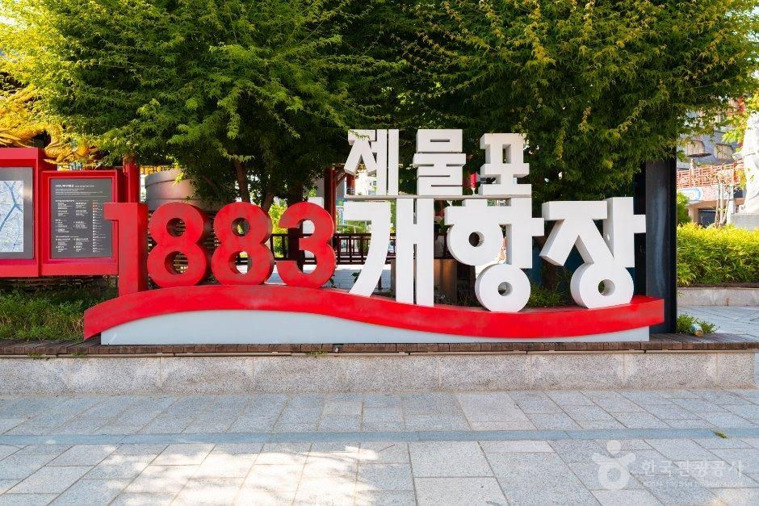
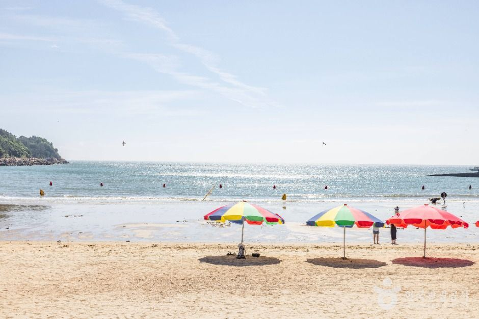
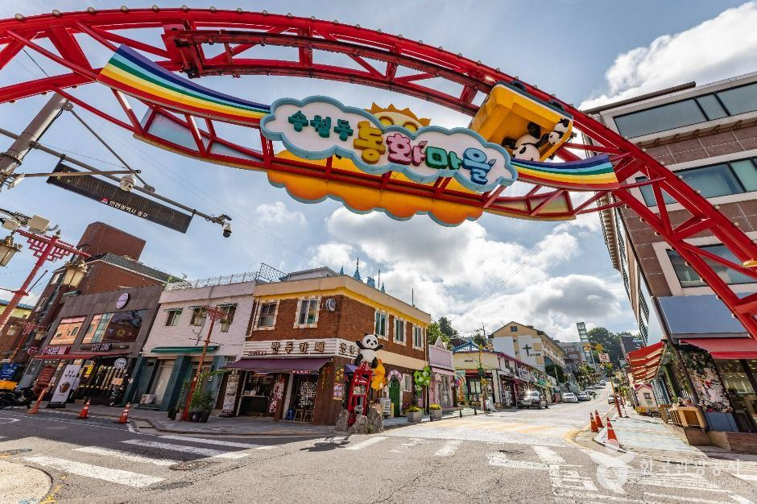
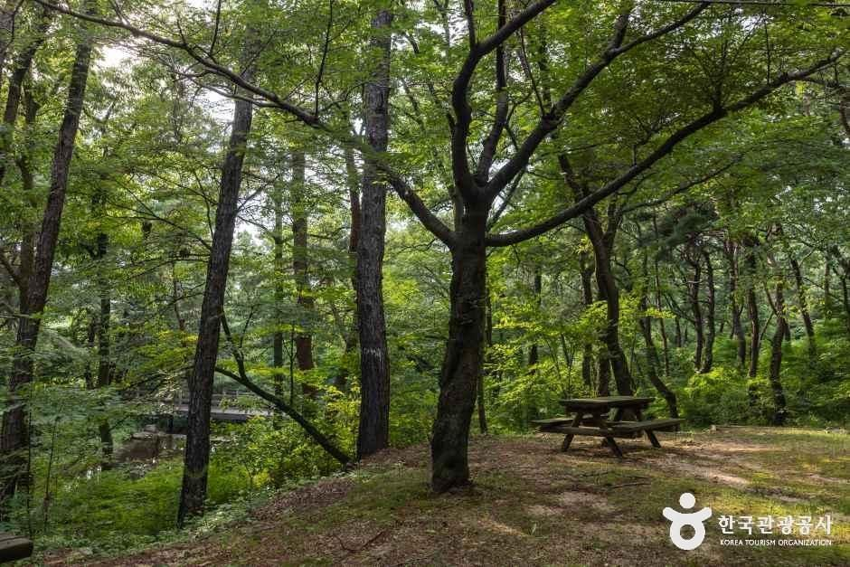

사진 송도 센트럴파크 · 출처: 한국관광공사 · 공공누리 제1유형
인천 여행 도우미에게 물어보세요
AI가 이 사이트에 실린 정보로 답하고, 답마다 출처 페이지를 붙입니다. 대화는 저장하지 않습니다.
Claude Haiku 5.5 · 키를 넣으면 바로 켜집니다
개수: TourAPI에 등록된 인천광역시 항목 수(2026-10-19 조회). 카페·디저트는 TourAPI 분류 '카페/찻집'·'제과'로 음식점에서 나눴습니다. 사이트에 공개되는 수는 검수 뒤 정해집니다.
지금·곧 열리는 행사
오늘(10.19.) 기준 진행 중이거나 열릴 행사입니다. 날짜와 장소는 TourAPI 행사 정보 그대로입니다.
- 1610월
드림파크 국화축제
10.16.(금)–10.25.(일)
검단구 자원순환로 170 (백석동)
진행 중 - 2310월
인천 영화 주간 2026
10.23.(금)–10.25.(일)
연수구 청능대로 210 (동춘동)
4일 뒤 - 2410월
오슬로우 빈티지 마켓
10.24.(토)–10.25.(일)
제물포구 제물량로218번길 3 (해안동1가)
5일 뒤 - 2011월
2026 인천국제디자인페어(INDEF)
11.20.(금)–11.22.(일)
남동구 예술로 149 (구월동)
32일 뒤 - 14월~
2026 문화가 있는 날
4.1.(수)–11.29.(일)
제물포구 송현동
진행 중 - 51월~
왕가의 산책
1.5.(월)–12.31.(목)
영종구 공항로 272 (운서동)
진행 중
권역별 인천
바다·섬·구도심이 넓게 흩어진 도시라, 여행 동선이 겹치는 구·군끼리 묶었습니다.

개항장·월미
제물포구
개항장 거리 · 신포국제시장 · 송월동 동화마을 · 월미공원

영종·용유
영종구
을왕리해수욕장 · 인천국제공항 주변
송도·연수
연수구
송도 센트럴파크
강화
강화군
강화 전등사 · 마니산 치유의 숲
도심·소래
미추홀구 · 남동구 · 부평구 · 계양구 · 서해구 · 검단구
소래포구 · 인천대공원
옹진 섬
옹진군
섬 장소는 다음 수집에서 채웁니다
권역을 나눈 기준: TourAPI 법정동 코드의 인천광역시 11개 구·군(제물포구·영종구·미추홀구·연수구·남동구·부평구·계양구·서해구·검단구·강화군·옹진군)을 여행 동선으로 묶었습니다. 한 장소는 주소의 구·군으로 한 권역에만 들어갑니다.
가볼 만한 곳
TourAPI에 사진(공공누리 제1유형)이 있는 인천 장소 일부입니다. 페이지마다 운영시간·쉬는 날·요금·주차를 먼저 보여 줄 예정입니다.
개항장 거리
제물포구 관동1가
개항장·월미신포국제시장
제물포구 신포동
개항장·월미
송월동 동화마을
제물포구 송월동3가
개항장·월미인천개항장 근대건축전시관
제물포구 신포로23번길 77
개항장·월미월미공원
제물포구 북성동1가
개항장·월미을왕리해수욕장
영종구 을왕동
영종·용유소래포구
남동구 포구로 2-6
도심·소래인천대공원
남동구 무네미로 236
도심·소래강화 전등사
강화군 길상면
강화
마니산 치유의 숲
강화군 화도면
강화
사진 출처: 한국관광공사(TourAPI) · 공공누리 제1유형. 장소 상세(전화·이용시간·쉬는 날·요금·주차)는 다음 수집 단계에서 필드별 출처와 함께 채웁니다.